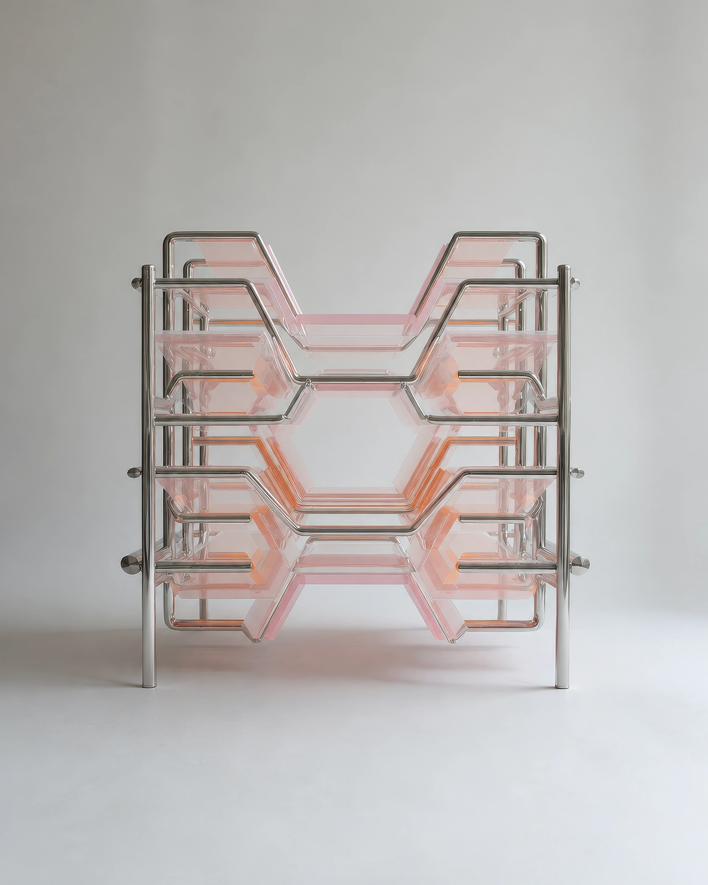

No.23 Adaptive Device
Storage Rest Capsule, 2046
사용자의 휴식 공간을 최소한의 크기로 압축하고, 절약된 부피를 개인 물품을 위한 수납 공간으로 전환한다. 중앙의 휴식 공간은 신체만 겨우 수용할 수 있도록 설계되었으며, 주변의 적층형 패널은 책, 취미용품, 수집품 등 개인의 소장품을 보관하는 공간으로 사용된다.
- 크기/무게
- W: 125, H: 120(cm) / 24(kg)
- 재질
- 스테인리스 스틸, 투명 아크릴, 폴리카보네이트, 금속 연결 부품
- 사용 목적
- 자신의 소장품과 취미 생활을 유지하기 위해 휴식 공간을 최소화하고, 확보된 공간을 수납 공간으로 전환
- 유도 자세
- 가운데 좁은 공간에 누워서 생활
- 추정 환경
-
취미 용품이 많은 1인 가구
책, 피규어, 레코드 등 개인 소장품을 보관하는 협소주택
생활 공간보다 수집 공간을 우선시하는 초소형 주거 - 추정 사용
- 중앙 휴식 공간의 깊은 눌림 자국과 주변 수납 패널의 빈번한 개폐 흔적으로 보아, 사용자는 먼저 소장품을 주변 패널에 정리한 뒤 신체를 중앙 구조 안으로 삽입하여 휴식을 취했던 것으로 추정된다. 구조체는 사용자의 체형에 맞게 점차 변형되었으며, 휴식 공간보다 수납 공간의 사용 빈도가 더 높았던 것으로 보인다.
* 이미지에 마우스를 올려보세요.